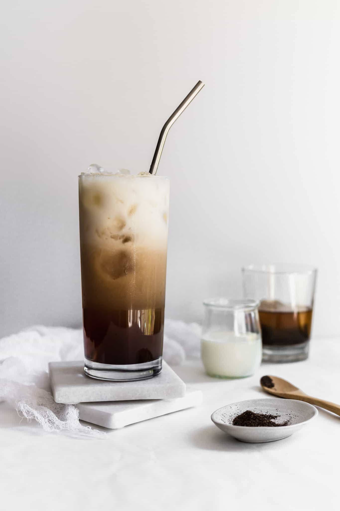

Hojicha Latte

Description
A hojicha latte is a tea latte made with Japanese roasted green tea (hojicha),
water, and milk, offering a unique, nutty, earthy,
and toasty flavor profile, often with notes of
cocoa and caramel
Ingredients
- 1 teaspoon Hojicha Powder
- 60 ml 80°C (175°F) filtered water
- 80 ml milk (we used oat milk)
- Optional: 1 teaspoon sweetener (we used maple syrup)
Steps
- Whisk 1 teaspoon of Hojicha Powder and 60 ml of 80°C (175°F) filtered water together by using a traditional bamboo whisk, a milk frother, or spoon.
- If desired, add 1 teaspoon of sweetener and stir.
- Steam and froth 180 ml milk.
- Pour the hot milk into your tea bowl or mug and enjoy your rich and creamy Hojicha Latte in a cozy spot in your home.
Home